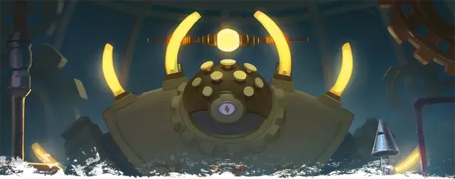

Модрон гекстон
Hexton Modron
Огромный Конструкт, законно-нейтральный

Класс Доспеха 17 (природный доспех)
Хиты 209 (22к12 + 66)
Скорость 40 футов, летая 40 футов (парит)
| мод | спас | ||
|---|---|---|---|
| СИЛ | 19 | +4 | +4 |
| ЛОВ | 16 | +3 | +3 |
| ТЕЛ | 17 | +3 | +3 |
| мод | спас | ||
|---|---|---|---|
| ИНТ | 19 | +4 | +9 |
| МДР | 17 | +3 | +8 |
| ХАР | 15 | +2 | +2 |
Навыки Восприятие +13
Сопротивление урону психическая энергия, электричество
Иммунитет к состояниям испуг, очарование
Чувства истинное зрение 120 футов, пассивное Восприятие 23
Языки Все, Телепатия 120 фт.
Опасность 13 (10000 опыта)
Бонус мастерства +5
Особенности
Косное сознание. Гекстона нельзя заставить действовать так, как противоречит его природе или инструкциям.
Распад. Если гекстон умирает, его тело рассыпается в пыль, оставляя лишь оружие и то, что он нёс.
Боевая готовность. Гекстон с преимуществом совершает броски инициативы.
Легендарное сопротивление (4/день). Если гекстон проваливает спасбросок, он может вместо этого сделать спасбросок успешным.
Действия
Мультиатака. Гекстон совершает одну атаку Клещами и две атаки Щупальцем.
Клещи. Рукопашная атака оружием: +9 к попаданию, досягаемость 10 футов, одна цель. Попадание: 13 (2к8 + 4) дробящего урона плюс 10 (3к6) урона силовым полем. Если цель - существо, она должно преуспеть в спасброске Телосложения Сл 17 иначе станет недееспособной до конца своего следующего хода.
Щупальце. . Рукопашная атака оружием: +9 к попаданию, досягаемость 10 футов, одна цель. Попадание: 15 (2к10 + 4) колющего урона, и если цель - существо Среднего размера или меньше, оно становится схваченным (Сл высвобождения 14). Пока захват не окончится, гекстон не сможет использовать это щупальце против других целей. У гекстона шесть щупалец, каждое из которых может держать в захвате одну цель.
Использование заклинаний. Гекстон накладывает одно из следующих заклинаний, не нуждаясь в материальных компонентах, используя Интеллект в качестве базовой характеристики (Сл спасброска заклинания 17):
• Неограниченно: обнаружение магии [detect magic], рассеивание магии [dispel magic], починка [mending] (действием)
• 1/день каждое: уход в иной мир [plane shift] (только на себя), защита от зла и добра [protection from evil and good]
Реакции
Гекстон может совершать до трёх реакций за раунд, но только одну за ход.
Противодействие магии. Гекстон пытается прервать заклинание, накладывание которого он видит, в пределах 60 футов. Если заклинание 3-го уровня или ниже, заклинание проваливается и не оказывает никакого эффекта. Если заклинание 4-го уровня или выше, гекстон совершает проверку Интеллекта Сл, равной 10 + уровень заклинания. В случае успеха заклинание проваливается и не оказывает никакого эффекта.
Молниеносное возмездие. Когда существо находящееся в пределах 120 футов от гекстона наносит ему урон, гекстон магически наносит ответный удар разрядом электричества. Существо должно совершить спасбросок Ловкости Сл 17, получая 11 (2к10) урона электричеством при провале или половину этого урона при успехе.
Описание
“Хочешь выучить Модронский? Да, я говорю на нём. Урок первый: "бип-буп’. Это означает "Привет, друг, я не причиню тебе вреда". Честное слово, я клянусь тебе!"
- Морте, сопровождая это, несомненно, невинным хихиканьем
Когда армии Механуса мобилизуются против сил хаоса, гекстоны становятся полевыми генералами, командующими войсками модронов. Эти неуклюжие лидеры возглавляют группы модронов в походах за пределами Механуса, наиболее заметным примером которых является Великий марш модронов. Гекстоны имеют прочные каркасы, обрамлённые шестью блестящими фланцами. Они могут похвастаться парой рук и щупалец, оба из которых заканчиваются мощными клешнями.
Модроны
Построенные на плане Механуса, модроны являются частично механическими существами, которые принадлежат к строгой иерархии. Каждый модрон послушно подчиняется командам, исходящим непосредственно от вышестоящего по рангу, и, в свою очередь, действует как старший по рангу, находящемуся непосредственно под ним, передавая команды от "образцов закона" самому низшему монодрону [monodrone]. В то время как большинство модронов являются низкоранговыми модронами - монодронами [monodrone], дуодронами [duodrone], тридронами [tridrone], квадронами [quadrone] и пентадронами [pentadrone], — высокоранговые модроны занимают руководящие должности, поддерживая порядок в Механусе и за его пределами. Дополнительную информации о модронах смотрите в "Бестиарии".